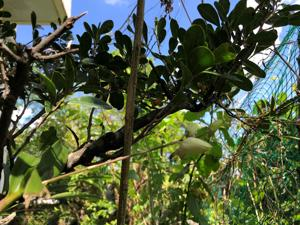

うるがいの話 ある日
最新: 夏休み終わりの日
うるがいとは 前提知識です
カニの画像をクリックすると『うるがいの話』サイトを表示します
うるがい(ｳﾙｶﾞｲ urugai)とは、『もずくがに』の名前でとても大きくなります。
たながー（ﾀﾅｶﾞｰtanagaa）とは手長えびのことで、何種類かあり大きいのは車 エビぐらいになります。
ぶながー(bunagaa)とは、赤い髪の毛、赤い身体、そして身長は１ｍ２０ｃｍ ぐらい、川の蟹を食べているの目撃された。場所は沖縄県国頭郡大宜味村のと ある村僕の隣近所に住んでいる爺さんから、聞いた話です。
2021年08月31日 (火）
夏休み終わりの日
16:11

静かだ！、今日は８月３１日、いつもだと夏休み終わりの日。コロナ禍でグチ
ャとなっている、でも決勝戦はないだろうと見込んだ甲子園は何とか終わり、
パラオリンピックでも上与那原さんがメダルを取ったり、静かに時は過ぎてい
く。この前、「ボンジュール！辻仁成の春のパリごはん」の衛星放送をみたと
き辻仁成さんが、少し歌っていたサントワミーのフレーズから刺激をうけ、ネ
ットからギターのＴＡＢ譜を捜し、午前一杯かけて半分何とかギター音楽ソフ
トに楽譜を打ち込む。サントワミーの歌は「愛の讃歌」の越路吹雪や『希望』
の岸洋子の声が耳に残っているが、いずれも１９８０年と１９９２年に亡くな
っている。歌詞は日本語で楽譜には登録したが、いつかはフランス語で歌えれ
ばいいな。おととい、宮古発！『下地 暁 のわいわいワイドー！』のラジオ放
送を聴いているとアシスタント役の下地 美波さんがJINSEI STORIES滞仏日
記のプログを見ているとのこと、ヘー若い人も見ているのだ。仁成さんうつで
もプログを書き込んでいる、さすが作家である。このプログを教えてくれた友
達も今うつかな、心配である。今日のコロナの新規感染は５５４人、先週の８
百越えがピークのような気がする、このまま下がればいいな。さて、サントワ
ミーを弾いてみるか。静かなので隣に聞こえないよう、風を入れていた部屋の
ガラス戸を閉じる。